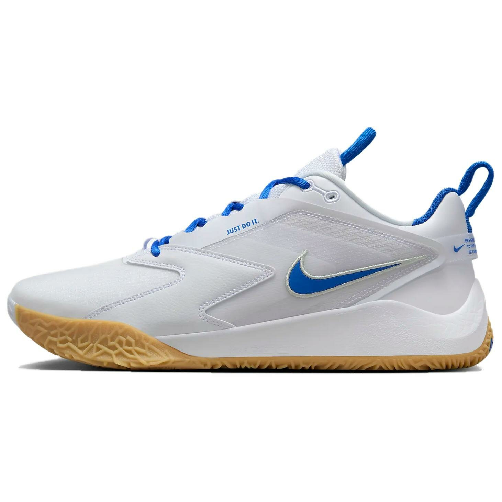

Универсальные волейбольные кроссовки с превосходной амортизацией и поддержкой стопы. Технология Zoom Air обеспечивает быстрый отклик и энергичность движений, а прочная подошва гарантирует надежное сцепление с площадкой. Идеальный выбор для игроков любого уровня.
Nike HyperAce 3 — это третье поколение популярной линейки волейбольных кроссовок от американского бренда Nike, объединившее в себе лучшие технологии для комфортной и эффективной игры. Модель оснащена инновационной системой амортизации Zoom Air, расположенной в пяточной области, которая обеспечивает мгновенный отклик и энергичное движение при каждом прыжке и приземлении. Верх из дышащей сетки с синтетическими накладками гарантирует оптимальную вентиляцию и надежную фиксацию стопы во время активных перемещений по площадке. Технология Dynamic Fit обеспечивает плотное прилегание и индивидуальную поддержку, адаптируясь к движениям стопы. Усиленная пятка и прочная резиновая подошва с особым рисунком протектора гарантируют стабильность и отличное сцепление с любым покрытием. Универсальная конструкция делает эти кроссовки идеальным выбором как для начинающих, так и для опытных волейболистов, ценящих надежность и комфорт.